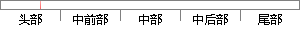

3 ARM处理器的寄存器
片段位置图

相似结果
相似片段：3.1.3ARM处理器的寄存器 ARM处理器共有37个寄存器,其中包括31个通用寄存器和6个状态寄存器,均为32位寄存器。每种处理器模式都有一组相应的寄存器。通用寄存...
| 标题 | 《基于ARM926EJ-S的SoC系统设计》 |
| 对比库 | 中国学位论文全文数据库 |
| 作者 | 杨清峰 |
| 机构 | 西安电子科技大学 |
| 分类 | 通信与信息系统 |
| 年份 | 2009 |
| 相似率 | 66.67% （轻度抄袭） |